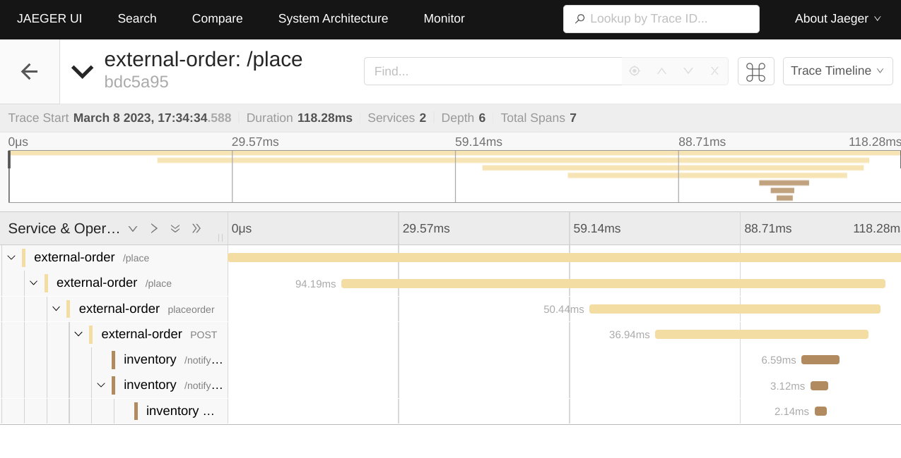
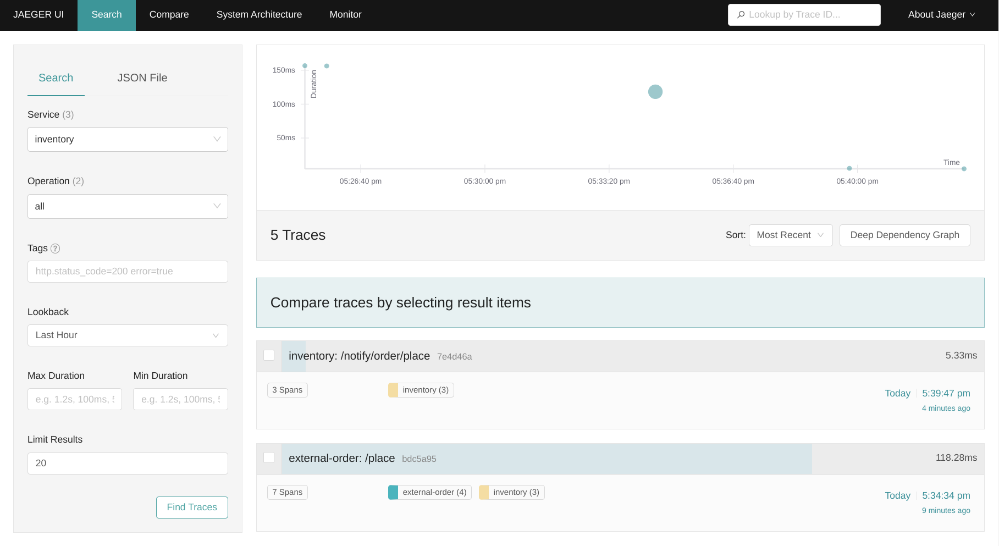
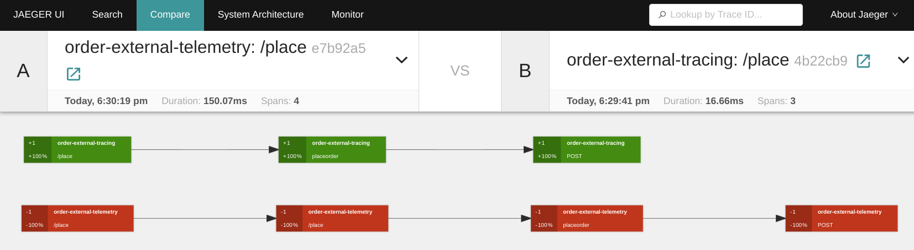

Tracing is an important approach for controlling and monitoring the experience of users, it allows us to gather more information about an integration’s performance.
Camel K has been providing support for distributed tracing using OpenTracing since long time. At the beginning of 2022, the CNCF announced that they were archiving the OpenTracing project in favor of the OpenTelemetry project. OpenTelemetry is the latest solution created by merging OpenTracing and OpenCensus. As a result, we decided in Camel K 1.12 to introduce the telemetry trait based on OpenTelemetry. At the same time we decided to deprecate the tracing trait based on OpenTracing.
I’ll walk you through the configurations needed to support Distributed tracing for your Camel integrations in this blog post.
Distributed Tracing tools
OpenTelemetry defines the OpenTelemetry Protocol (OTLP) that allows any Distributed Tracing tool that provides an OTLP compatible collector API to be used. While OpenTelemetry is still CNCF incubating project, it has become an industry-standard and is now natively supported by many Distributed Tracings tools.
The telemetry trait has been tested on Jaeger (v1.35+), OpenTelemetry Collector and Grafana Tempo at the time of writing this blog post.
We will be using Jaeger for this blog post manipulations.
Camel K
The telemetry trait is available starting from Camel K version 1.12, so you should first check your kamel client version
$ kamel version
Camel K Client 1.12.0
To install the Camel K operator just execute
$ kamel install
Check if the Camel K operator is available
$ kubectl get pods -l name=camel-k-operator
NAME READY STATUS RESTARTS AGE
camel-k-operator-5b897ddcdd-4qwqb 1/1 Running 0 50s
For more information see the documentation
Install Jaeger
For this installation, you should first ensure that ingress is available on your kubernetes. If you are working on minikube minikube addons enable ingress should be enough.
If Jaeger is not already available on your kubernetes instance, an easy way to install it on a kubernetes is to install the Jaeger operator (see https://www.jaegertracing.io/docs).
In short, to install the Jaeger operator you should:
- Install cert-manager if it is not installed as it is required
# The cert manager is a prerequisite to the Jaeger operator (see https://cert-manager.io/docs/installation/)
$ kubectl apply -f https://github.com/cert-manager/cert-manager/releases/download/v1.10.1/cert-manager.yaml
Wait 1 or 2 minutes, we want to ensure the cert-manager has had enough time to be fully deployed
# see https://www.jaegertracing.io/docs/1.42/operator/#installing-the-operator-on-kubernetes
$ kubectl create namespace observability
$ kubectl create -f https://github.com/jaegertracing/jaeger-operator/releases/download/v1.42.0/jaeger-operator.yaml -n observability
Check if Jaeger-operator is available:
$ kubectl get deployment jaeger-operator -n observability
NAME DESIRED CURRENT UP-TO-DATE AVAILABLE AGE
jaeger-operator 1 1 1 1 48s
To use Jaeger, you can install the AllInOne image:
$ kubectl apply -f - << EOF
apiVersion: jaegertracing.io/v1
kind: Jaeger
metadata:
name: instance
EOF
Check the presence of the Jaeger instance:
$ kubectl get jaeger
NAME STATUS VERSION STRATEGY STORAGE AGE
instance Running 1.42.0 allinone memory 8s
Run some Camel K Integrations with Telemetry trait
Now that we have Jaeger available on the Kubernetes cluster, the next step is to run some integrations in a Kubernetes cluster where Camel K is installed. You can find the source code in the Camel K example GitHub repository.
We will be creating two integration routes as the distributed services:
- Inventory which is also a rest service in charge of product’s inventory management
InventoryService.java
import org.apache.camel.builder.RouteBuilder;
import org.apache.camel.model.rest.RestBindingMode;
import org.apache.camel.component.jackson.JacksonDataFormat;
import java.text.SimpleDateFormat;
import org.apache.camel.Exchange;
import java.util.Date;
import java.util.Map;
public class InventoryService extends RouteBuilder {
@Override
public void configure() throws Exception {
restConfiguration()
.enableCORS(true)
.bindingMode(RestBindingMode.json);
rest()
.post("/notify/order/place")
.to("direct:notify");
JacksonDataFormat invDataFormat = new JacksonDataFormat();
invDataFormat.setUnmarshalType(InventoryNotification.class);
from("direct:notify")
.log("notifyorder--> ${body}")
.setHeader(Exchange.CONTENT_TYPE, constant("application/json"))
.bean(InventoryNotification.class, "getInventoryNotification(${body['orderId']},${body['itemId']},${body['quantity']} )")
.marshal(invDataFormat)
.log("Inventory Notified ${body}")
.convertBodyTo(String.class)
;
}
private static class InventoryNotification {
private Integer orderId;
private Integer itemId;
private Integer quantity;
private String department;
private Date datetime;
public static InventoryNotification getInventoryNotification(Integer orderId, Integer itemId, Integer quantity ){
InventoryNotification invenNotification = new InventoryNotification();
invenNotification.setOrderId(orderId);
invenNotification.setItemId(itemId);
invenNotification.setQuantity(quantity);
invenNotification.setDepartment("inventory");
SimpleDateFormat formatter= new SimpleDateFormat("yyyy-MM-dd 'at' HH:mm:ss z");
invenNotification.setDatetime(new Date(System.currentTimeMillis()));
return invenNotification;
}
public void setOrderId(Integer orderId){
this.orderId=orderId;
}
public void setItemId(Integer itemId){
this.itemId=itemId;
}
public void setQuantity(Integer quantity){
this.quantity=quantity;
}
public Integer getOrderId(){
return this.orderId;
}
public Integer getItemId(){
return this.itemId;
}
public Integer getQuantity(){
return this.quantity;
}
public String getDepartment() {
return department;
}
public void setDepartment(String department) {
this.department = department;
}
public Date getDatetime() {
return datetime;
}
public void setDatetime(Date datetime) {
this.datetime = datetime;
}
}
}
- Order which is a rest service called by a user to place an order for a product, that will then notify the Inventory service
OrderService.java
import java.util.HashMap;
import org.apache.camel.Processor;
import org.apache.camel.builder.RouteBuilder;
import org.apache.camel.model.rest.RestBindingMode;
import org.apache.camel.Exchange;
import org.apache.camel.component.jackson.JacksonDataFormat;
import org.apache.camel.processor.aggregate.GroupedBodyAggregationStrategy;
public class OrderService extends RouteBuilder {
@Override
public void configure() throws Exception {
restConfiguration()
.enableCORS(true)
.bindingMode(RestBindingMode.json);
rest()
.post("/place")
.to("direct:placeorder");
JacksonDataFormat jacksonDataFormat = new JacksonDataFormat();
jacksonDataFormat.setUnmarshalType(Order.class);
from("direct:placeorder")
.log("-----IN ${headers}")
.marshal(jacksonDataFormat)
.log("inputBody --> ${body}")
.to("http://inventory/notify/order?bridgeEndpoint=true")
.removeHeaders("*")
.log("responseBody from inventory --> ${body}")
.setHeader(Exchange.CONTENT_TYPE, constant("application/json"))
.setBody(simple("{\"inventory\":${body}}"))
.unmarshal().json()
;
}
private static class Order implements java.io.Serializable{
private static final long serialVersionUID = 1L;
private Integer orderId;
private Integer itemId;
private Integer quantity;
private String orderItemName;
private Integer price;
public void setOrderId(Integer orderId){
this.orderId=orderId;
}
public void setItemId(Integer itemId){
this.itemId=itemId;
}
public void setQuantity(Integer quantity){
this.quantity=quantity;
}
public void setOrderItemName(String orderItemName){
this.orderItemName=orderItemName;
}
public void setPrice(Integer price){
this.price=price;
}
public Integer getOrderId(){
return this.orderId;
}
public Integer getItemId(){
return this.itemId;
}
public Integer getQuantity(){
return this.quantity;
}
public String getOrderItemName(){
return this.orderItemName;
}
public Integer getPrice(){
return this.price;
}
}
}
Let’s run our camel integrations:
- the Inventory integration
$ kamel run InventoryService.java --name inventory \
-d camel-jackson \
-t telemetry.enabled=true \
-t telemetry.sampler=on \
-t ingress.enabled=true \
-t ingress.host=inventory.local
Integration "inventory" created
- the Order integration
$ kamel run OrderService.java --name order \
-d camel-jackson \
-t telemetry.enabled=true \
-t telemetry.sampler=on \
-t telemetry.service-name=external-order \
-t ingress.enabled=true \
-t ingress.host=order.local
Integration "order" created
This configuration will:
- enable tracing for our integrations
- sample all traces
- send traces to OTLP API endpoint
We are also using inventory.local and order.local host in ingress for the rest services so make sure that your DNS pointing to your cluster for both hostnames. You can execute echo "$(minikube ip) order.local inventory.local" | sudo tee -a /etc/hosts if you are working on minikube.
As you can see we did not provide the OTLP API endpoint as Camel K automatically discovered the Jaeger OTLP API endpoint available in the namespace. For any other Distributed Tracing tool you will have to declare it through -t telemetry.endpoint=xxxx. The telemetry trait is expecting an OTLP trace endpoint.
Now that everything is up let’s make some traces!
Generate some integration traces
- Let’s place some order:
$ curl http://order.local/place -d '{"orderId":1, "itemId":5, "quantity":1, "orderItemName":"best product", "price":99}' -H "Content-Type: application/json"
{"inventory":"{\"orderId\":1,\"itemId\":5,\"quantity\":1,\"department\":\"inventory\",\"datetime\":1678293274691}"}
If the call went well, you should have this response indicating that the inventory service has been called.
In Jaeger’s interface we should see the call with the spans referencing to the rest services and camel components.

- Now, we will stop collecting the traces for the Order integration:
kamel run OrderService.java --name order \
-d camel-jackson \
-t ingress.enabled=true \
-t ingress.host=order.local
Integration "order" updated
If we create another order:
$ curl http://order.local/place -d '{"orderId":2, "itemId":18, "quantity":1, "orderItemName":"another product", "price":5}' -H "Content-Type: application/json"
{"inventory":"{\"orderId\":2,\"itemId\":18,\"quantity\":1,\"department\":\"inventory\",\"datetime\":1678293771675}"}
As we can see in Jaeger’s interface looking for the inventory traces the call will only show the spans for inventory and no longer the order parent spans.

As you can see, it is quite easy to improve the observability of your integrations using the new telemetry trait.
From tracing to telemetry
We are encouraging migration from the tracing trait to the telemetry trait.
To give you some inputs on your migration, I will show you how to collect and compare the traces using both traits.
Let’s deploy two different Order integrations to compare the traces generated :
- stop collecting the traces from Inventory integration
kamel run InventoryService.java --name inventory \
-d camel-jackson
Integration "inventory" updated
- update the Order integration using the
telemetrytrait
$ kamel run OrderService.java --name order \
-d camel-jackson \
-t telemetry.enabled=true \
-t telemetry.sampler=on \
-t telemetry.service-name=order-external-telemetry \
-t ingress.enabled=true \
-t ingress.host=order.local
Integration "order" updated
- the Order integration using the
tracingtrait
$ kamel run OrderService.java --name order-tracing \
-d camel-jackson \
-t tracing.enabled=true \
-t tracing.sampler-type=const \
-t tracing.sampler-param=1 \
-t tracing.service-name=order-external-tracing \
-t ingress.enabled=true \
-t ingress.host=order-tracing.local
Integration "order-tracing" created
Don’t forget to ensure the new order-tracing.local hostname is configured for your kubernetes cluster!
Let’s create the same orders with the two order services:
- one with the order service using the new
telemetrytrait
$ curl http://order.local/place -d '{"orderId":20, "itemId":5, "quantity":1, "orderItemName":"strange product", "price":10}' -H "Content-Type: application/json"
{"inventory":"{\"orderId\":20,\"itemId\":5,\"quantity\":1,\"department\":\"inventory\",\"datetime\":1678296117315}"}
- another with the order services using the deprecated
tracingtrait
$ curl http://order-tracing.local/place -d '{"orderId":21, "itemId":5, "quantity":1, "orderItemName":"strange product", "price":10}' -H "Content-Type: application/json"
{"inventory":"{\"orderId\":21,\"itemId\":5,\"quantity\":1,\"department\":\"inventory\",\"datetime\":1678296184049}"}
As you can see, going from the trancing to the telemetry is quite effortless. On the trace side, from one protocol to another you should expect some differences in your tracing:

Conclusion
This blog post showed how you can use the new telemetry trait and how to work with the Jaeger Distributed Tracing tool. We also took the time to see how you can migrate from the deprecated tracing trait to the telemetry trait.
If you have any feedback, ideas or find a new issue, please create a new issue report in GitHub!